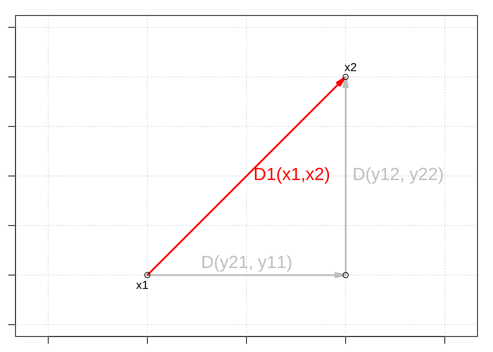

Chapter 9 Types of distance coefficients
There are three groups of distance coefficients: metrics, semimetrics, and nonmetrics .
9.1 Metric distances
The first group consists of metrics, and its coefficients satisfy the following properties:
minimum 0: if species \(a\) is equal to species \(b\), then \(D(a,b)=0\);
positiveness: if \(a \neq b\), then \(D(a,b) > 0\);
symmetry: \(D(a,b) = D(b,a)\);
triangle inequality: \(D(a,b) + D(b,c) \geq D(a,c)\). The sum of two sides of a triangle drawn in the Euclidean space is equal or greater than the third side.
We can spot all these properties below:
as.matrix(dist(spe))[1:3, 1:3]## 1 2 3
## 1 0.000000 5.385165 7.416198
## 2 5.385165 0.000000 2.449490
## 3 7.416198 2.449490 0.0000009.1.1 Euclidean distances
The most common metric distance measure is the Euclidean distance.
It is computed using the Pythagorean formula:
\[D_{1} (x_1,x_2) = \sqrt{\sum_{j=1}^p(y_{1j} - y_{2j})^2}\]

Using stats::dist(), we can compute it with:
spe.D.Euclid <- dist(x = spe, method = "euclidean")And, we can test whether a distance is Euclidean using:
is.euclid(spe.D.Euclid)## [1] TRUE9.1.2 Challenge #1
Your turn! Using the dist() function, compute the Euclidean distance matrix \(D_{hmm}\) for the species abundances by site matrix \(Y_{hmm}\) below:
| Sites | \(y_1\) | \(y_2\) | \(y_3\) |
|---|---|---|---|
| \(s_1\) | 0 | 4 | 8 |
| \(s_2\) | 0 | 1 | 1 |
| \(s_3\) | 1 | 0 | 0 |
Y.hmm <- data.frame(y1 = c(0, 0, 1), y2 = c(4, 1, 0), y3 = c(8,
1, 0))After this, look into the numbers, think critically about them!
Solution:
You should have something similar to this:
Y.hmm.DistEu <- dist(x = Y.hmm, method = "euclidean")
as.matrix(Y.hmm.DistEu)## 1 2 3
## 1 0.000000 7.615773 9.000000
## 2 7.615773 0.000000 1.732051
## 3 9.000000 1.732051 0.000000Now, look into the composition and the distances between sites \(s_2\) and \(s_3\) and between \(s_1\) and \(s_2\). What is going on?
The Euclidean distance between sites \(s_2\) and \(s_3\), which have no species in common, is smaller than the distance between \(s_1\) and \(s_2\), which share species \(y_2\) and \(y_3\) (!).
From an ecological perspective, this is a problematic assessment of the relationship among sites.
This issue is known as the double-zero problem, i.e. double zeroes are treated in the same way as double presences, so that the double zeros shrink the distance between two sites.
Euclidean distances ( \(D_1\) ) should thus not be used to compare sites based on species abundances.
9.1.3 Chord distances
Orlóci (1967) proposed the Chord distance to analyse community composition.
It consists of:
1. Normalizing the data, i.e. scaling site vectors to length 1 by dividing species abundances in a given sample by the square-rooted sum of square abundances in all samples as
\[y'_{Uj}=y_{Uj}/\sum^s_{j=1}{y^2_{Uj}}\]
2. Calculating the Euclidean distances on this normalized data:
\[D_{3} (x_1,x_2) = \sqrt{\sum_{j=1}^p(y'_{1j} - y'_{2j})^2}\]
We can use vegan::vegdist() for this one:
spe.D.Ch <- vegdist(spe, method = "chord")## Warning in vegdist(spe, method = "chord"): you have empty rows: their dissimilarities may be
## meaningless in method "chord"## Warning in vegdist(spe, method = "chord"): missing values in resultsas.matrix(spe.D.Ch)[1:3, 1:3]## 1 2 3
## 1 0.0000000 0.7653669 0.9235374
## 2 0.7653669 0.0000000 0.2309609
## 3 0.9235374 0.2309609 0.0000000When two sites share the same species in the same proportions of the number of individuals the value of \(D_3\) is \(0\), and when no species are shared, its value is \(\sqrt{2}\).
What happens if we compute Chord distances in the same site-by-species matrix \(Y_{hmm}\)?
Let us try the Chord distances in the same matrix we used for Challenge #1:
Y.hmm.DistCh <- vegdist(Y.hmm, method = "chord")as.matrix(Y.hmm.DistCh)## 1 2 3
## 1 0.0000000 0.3203645 1.414214
## 2 0.3203645 0.0000000 1.414214
## 3 1.4142136 1.4142136 0.000000Now, let us compare with what we obtained when we used Euclidean distances:
as.matrix(Y.hmm.DistEu)## 1 2 3
## 1 0.000000 7.615773 9.000000
## 2 7.615773 0.000000 1.732051
## 3 9.000000 1.732051 0.000000See again how our matrix looks:
Y.hmm## y1 y2 y3
## 1 0 4 8
## 2 0 1 1
## 3 1 0 0So, adding any number of double zeroes to a pair of sites does not change the value of \(D_3\). Hence, Chord distances can be used to compare sites described by species abundances!
9.1.4 Jaccard’s coefficient
Another popular association coefficient is the Jaccard similarity coefficient (1900).
It is only appropriate for binary data, and its distance coefficient is defined with the size of the intersection divided by the size of the union of the sample sets.
\[D_{7}(x_1,x_2) = 1 - \frac{\vert x_1 \cap x_2 \vert}{\vert x_1 \cup x_2 \vert} = 1 - \frac{\vert x_1 \cap x_2 \vert}{\vert x_1 \vert + \vert x_2 \vert - \vert x_1 \cap x_2 \vert} = 1-\frac{a}{a+b+c}\]
where,
- \(a\) is the number of species shared between \(x_1\) and \(x_2\) that are coded \(1\);
- \(b\) is the number of occurrences where \(x_1\) and \(x_2\) are known to be different;
- \(c\) is the number of common absences between \(x_1\) and \(x_2\), i.e. both \(0\).
For example, for sites \(x_1\) and \(x_2\):
| \(x_1,x_2\) | \(y_1\) | \(y_2\) | \(y_3\) | \(y_4\) | \(y_5\) |
|---|---|---|---|---|---|
| \(x_1\) | 0 | 1 | 0 | 1 | 0 |
| \(x_2\) | 0 | 1 | 1 | 1 | 1 |
So, we can calculate \(a\), \(b\), and \(c\): - \(a\) = 1 + 1 = 2
\(b\) = 1 + 1 = 2
\(c\) = 1
And, then our distance coefficient:
\[D_{7}(x_1,x_2) = 1-\frac{2}{2+2+1}= 0.6\]
In R, you can use use the vegan::vegdist() function to calculate the Jaccard’s coefficient:
spe.D.Jac <- vegdist(spe, method = "jaccard", binary = TRUE)## Warning in vegdist(spe, method = "jaccard", binary = TRUE): you have empty rows: their dissimilarities may be
## meaningless in method "jaccard"9.2 Semimetric distances
The second group consists of semimetrics, and they violate the triangle inequality property:
minimum 0: if species \(a\) is equal to species \(b\), then \(D(a,b)=0\);
positiveness: if \(a \neq b\), then \(D(a,b) > 0\);
symmetry: \(D(a,b) = D(b,a)\);
triangle inequality: \({D(a,b) + D(b,c) \geq or < D(a,c)}\). The sum of two sides of a triangle drawn in the Euclidean space is not equal or greater than the third side.
9.2.1 Sørensen’s coefficient
All parameters in Jaccard’s similarity coefficient have equal weights.
\[D_{7}(x_1,x_2)=1-\frac{a}{a+b+c}\]
However, you may want to consider that a presence of a species is more informative than its absence.
The distance corresponding to Sørensen’s similarity coefficient (1948) gives weight to double presences:
\[D_{13}(x_1,x_2)=1-\frac{2a}{2a+b+c}=\frac{b+c}{2a+b+c}\]
where,
- \(a\) is the number of species shared between \(x_1\) and \(x_2\) that are coded \(1\);
- \(b\) is the number of occurrences where \(x_1\) and \(x_2\) are known to be different;
- \(c\) is the number of common absences between \(x_1\) and \(x_2\), i.e. both \(0\).
In R, you can also use use the vegan::vegdist() function to calculate the Sørensen’s coefficient:
spe.D.Sor <- vegdist(spe, method = "bray", binary = TRUE)## Warning in vegdist(spe, method = "bray", binary = TRUE): you have empty rows: their dissimilarities may be
## meaningless in method "bray"Because both Jaccard’s and Sørensen’s are only appropriate for presence-absence data, you must binary-transform abundance data using
binary = TRUEinvegdist().
9.2.2 Bray-Curtis’ coefficient
The Bray-Curtis dissimilarity coefficient is a modified version of the Sørensen’s index and allows for species abundances:
\[D_{14}(x_1,x_2)=\frac{\sum{\vert y_{1j}-y_{2j}\vert}}{\sum{( y_{1j}+y_{2j})}}=\]
\[D_{14}(x_1,x_2)=1 - \frac{2W}{A+B}\]
where,
\(W\) is the sum of the lowest abundances in each species found between sites \(x_1\) and \(x_2\);
\(A\) is the sum of all abundances in \(x_1\); and,
\(B\) is the sum of all abundances in \(x_2\).
For example, for sites \(x_1\) and \(x_2\):
| \(x_1,x_2\) | \(y_1\) | \(y_2\) | \(y_3\) | \(y_4\) | \(y_5\) |
|---|---|---|---|---|---|
| \(x_1\) | 2 | 1 | 0 | 5 | 2 |
| \(x_2\) | 5 | 1 | 3 | 1 | 1 |
So: - \(W = 2 + 1 + 0 + 1 + 1 = 5\)
\(A = 2 + 1 + 0 + 5 + 0 = 8\)
\(B = 5 + 1 + 3 + 1 + 2 = 12\)
\[D_{14}(x_1,x_2) = 1-\frac{2 \times 5}{8+12} = 0.5\]
To calculate the Bray-Curtis dissimilarity coefficient, which can account for abundances, you need to set binary = FALSE.
spe.db.pa <- vegdist(spe, method = "bray", binary = FALSE)## Warning in vegdist(spe, method = "bray", binary = FALSE): you have empty rows: their dissimilarities may be
## meaningless in method "bray"spe.db <- as.matrix(spe.db.pa)9.3 Nonmetric distances
minimum 0: if species \(a\) is equal to species \(b\), then \(D(a,b)=0\);
positiveness:if \(a \neq b\), then \(D(a,b) > or < 0\);symmetry: \(D(a,b) = D(b,a)\);
triangle inequality: \({D(a,b) + D(b,c) \geq or < D(a,c)}\). The sum of two sides of a triangle drawn in the Euclidean space is not equal or greater than the third side.